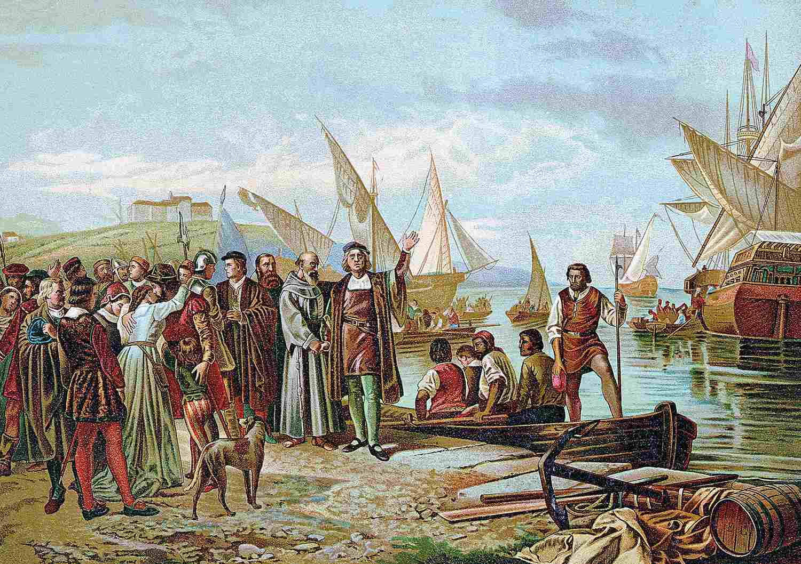
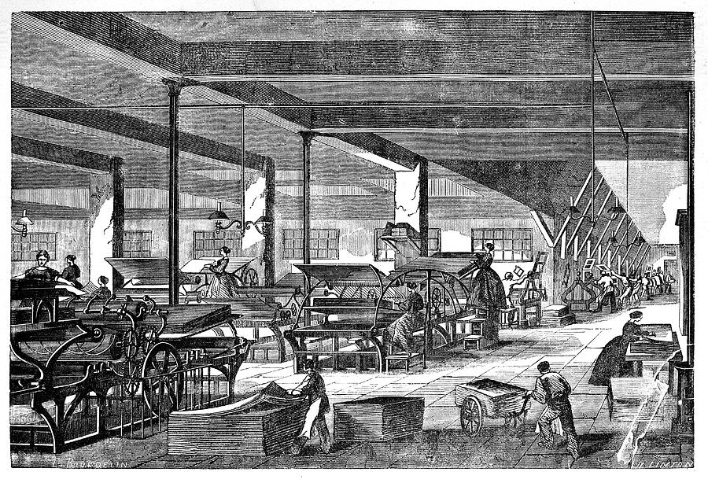
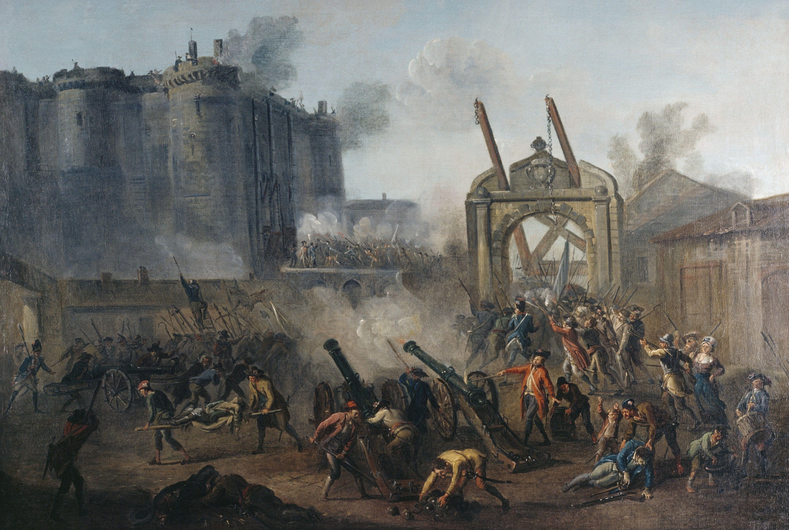
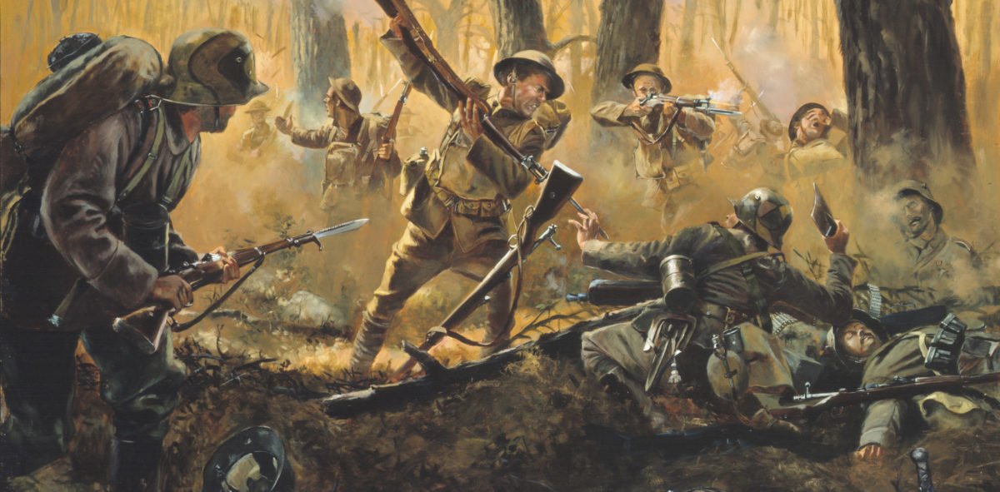
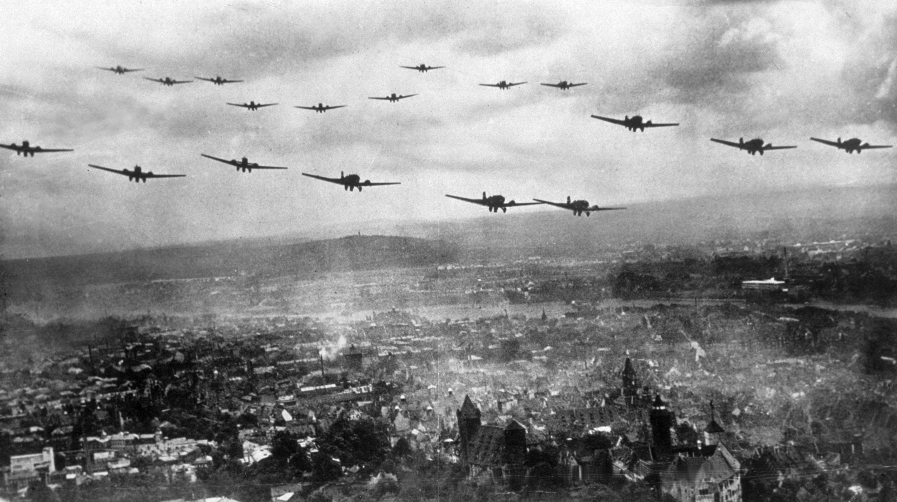
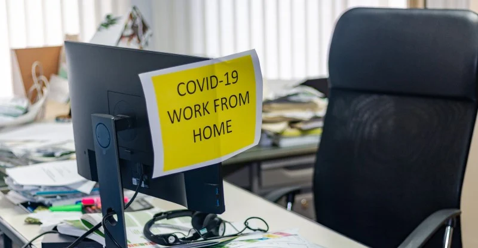

The 11 Most Influential Events in World History That Shaped Our World
Throughout human civilization, certain pivotal moments have dramatically altered the course of history. These events transformed societies, redefined power structures, and laid the foundations for our modern world. Here are the 10 most significant historical events that changed humanity forever.
1. The Neolithic Revolution (~10,000 BCE)
- Marked humanity's transition from nomadic hunter-gatherers to settled agricultural societies
- Enabled food surplus, leading to population growth and specialization of labor
- Gave rise to the first permanent settlements and proto-cities like Çatalhöyük
- Laid foundations for social stratification and early forms of governance
- Triggered technological innovations like pottery, irrigation, and animal domestication
2. Invention of Writing (~3200 BCE, Sumer)
- Emerged independently in Mesopotamia, Egypt, China, and Mesoamerica
- Allowed recording of laws (Hammurabi's Code), literature (Epic of Gilgamesh), and trade
- Enabled complex administration of growing city-states and empires
- Preserved knowledge across generations, accelerating cultural development
- Evolved from pictographs to alphabets, revolutionizing communication
3. Foundation of the Roman Empire (27 BCE)

- Created unprecedented infrastructure (roads, aqueducts) connecting three continents
- Developed legal principles that still influence modern justice systems
- Spread Latin language, ancestor of Romance languages spoken by 800M today
- Facilitated Christianity's growth from persecuted sect to world religion
- Preserved and transmitted Greek knowledge through medieval Europe
4. Spread of Christianity (after 313 CE).
- Christianity emerged from Judaism in 1st-century Judea, spreading rapidly via Paul's missionary work and Roman infrastructure.
- Despite Roman persecutions, martyrs' sacrifices inspired underground worship in catacombs and house churches.
- Constantine's conversion (312 CE) and the Edict of Milan (313 CE) led to Christianity becoming the state religion by 380 CE.
- The Council of Nicaea (325 CE) defined core doctrines while theologians like Augustine shaped Christian thought.
- Christianity replaced pagan traditions, converting temples and holidays, ultimately shaping medieval European civilization.
5. Age of Exploration (15th-16th centuries)

- Columbus' 1492 voyage initiated sustained European-American contact
- Globalized world economy through Columbian Exchange of crops/animals
- Enabled rise of Atlantic slave trade (12M+ Africans transported)
- Shifted economic power from Mediterranean to Atlantic nations
- Sparked scientific revolution through discovery of new species/lands
6.Industrial Revolution (1760-1840)

- Steam engine (Watt, 1776) multiplied productivity exponentially
- Transformed social structures through urbanization and new social classes
- Created modern capitalism and consumer culture
- Led to environmental changes through fossil fuel use
- Inspired competing economic ideologies (Marxism vs Capitalism)
7. French Revolution (1789-1799)

- Introduced modern concepts of citizenship and human rights
- Inspired revolutions globally (Haiti, Latin America)
- Nationalized church property, secularizing society
- Demonstrated power of mass mobilization and nationalism
- Its excesses led to Napoleon's rise and European wars
8. World War I (1914-1918)

- First "total war" using tanks, planes, chemical weapons
- Destroyed four empires (German, Russian, Austro-Hungarian, Ottoman)
- Redrew Middle Eastern borders with lasting consequences
- Accelerated women's rights through wartime workforce participation
- Created League of Nations, precursor to UN
9. World War II (1939-1945)

- Holocaust systematized genocide, killing 6M Jews
- Atomic bombs introduced existential threat of nuclear war
- Established US and USSR as superpowers in bipolar world
- Decolonization movements gained momentum post-war
- Spurred technological innovations (computers, radar, rockets)
10. Digital Revolution (Late 20th-21st centuries)
- Personal computers (1970s) democratized information access
- Internet (1990s) created first truly global communication network
- Smartphones (2007) made computing omnipresent
- Social media transformed politics, commerce, and relationships
- AI emergence poses fundamental questions about human uniqueness
11. COVID-19 Pandemic (2020-2023)

- First global pandemic in digitally connected era
- Accelerated remote work trends and digital transformation
- Exposed vulnerabilities in global supply chains
- Sparked fastest vaccine development in history (mRNA technology)
- May have permanently altered urban living patterns
Honorable Mentions:
- Printing Press (1440, Gutenberg) - mass knowledge dissemination
- USSR Collapse (1991) - end of Cold War and new geopolitics
- COVID-19 Pandemic (2020) - accelerated digitization and globalization crisis
These events shaped our world. Which one do you think had the greatest impact?